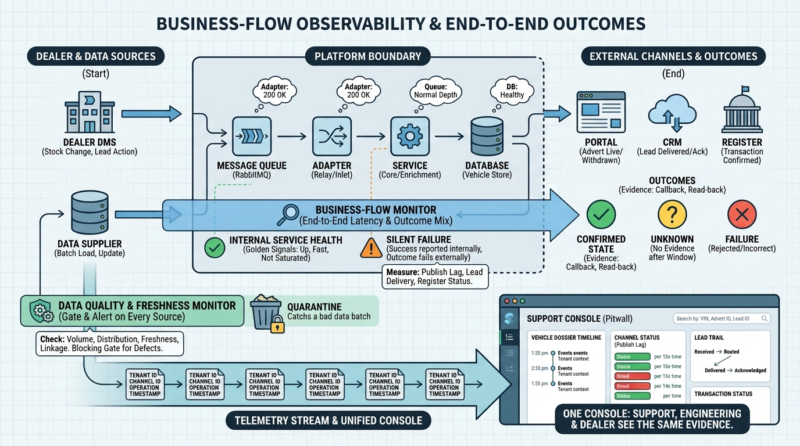

Part VII — OPERATIONS: Running the Platform
Seeing the Platform: Observability, Data Quality Operations and Support

Image generated by Google Gemini (gemini-3-pro-image-preview)
Part VII — OPERATIONS: Running the Platform

Image generated by Google Gemini (gemini-3-pro-image-preview)